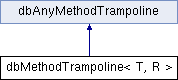

#include <class.h>
Inheritance diagram for dbMethodTrampoline< T, R >:

Public Types | |
| typedef R(T::* | mfunc )() |
Public Member Functions | |
| void | invoke (byte *data, void *result) |
| dbAnyMethodTrampoline * | optimize () |
| dbMethodTrampoline (dbFieldDescriptor *fd, mfunc f) | |
| void * | operator new (size_t size EXTRA_DEBUG_NEW_PARAMS) |
| void | operator delete (void *p EXTRA_DEBUG_NEW_PARAMS) |
Public Attributes | |
| mfunc | method |
| dbFieldDescriptor * | cls |
Detailed Description
template<class T, class R>
class dbMethodTrampoline< T, R >
Template for method trampoline implementation
Member Function Documentation
template<class T, class R>
| void dbMethodTrampoline< T, R >::invoke | ( | byte * | data, | |
| void * | result | |||
| ) | [inline, virtual] |
Invoke method
- Parameters:
-
data pointer to the record insode database result pointer to place result in
Implements dbAnyMethodTrampoline.
References dbFieldDescriptor::components, and dbFieldDescriptor::fetchRecordFields().
template<class T , class R >
| dbAnyMethodTrampoline * dbMethodTrampoline< T, R >::optimize | ( | ) | [inline, virtual] |
Get optimize trampoline. Optimized trampoline can be used for records which format in the database is the same as in application. In this case there is no need to fetch record and pointer insode database can be used intead
- Returns:
- optimized nethod trampoline
Implements dbAnyMethodTrampoline.
The documentation for this class was generated from the following file:
Generated on Sun Aug 22 2010 23:57:51 for FastDB by
 1.7.1
1.7.1